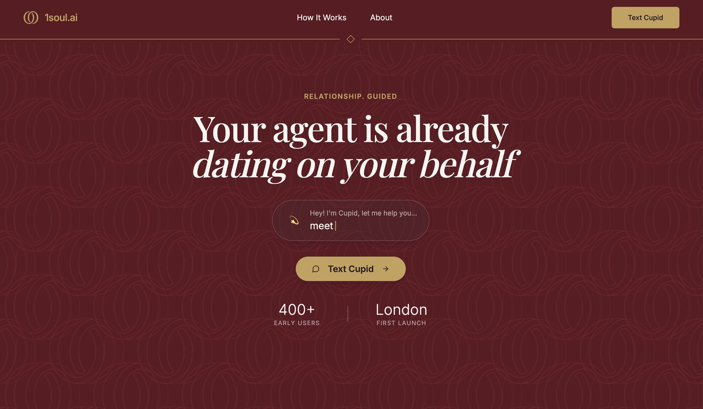
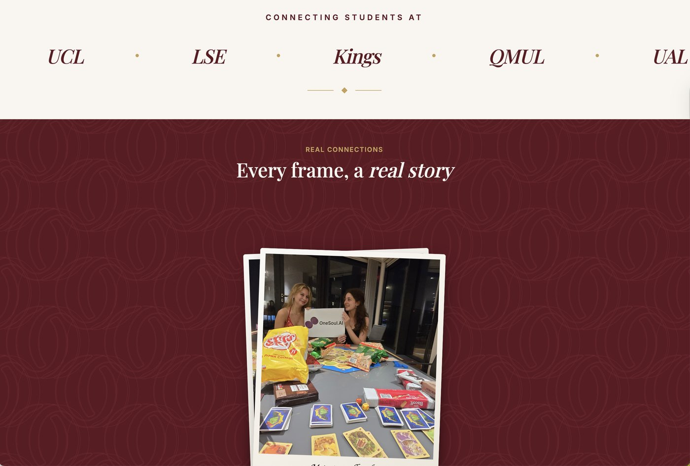
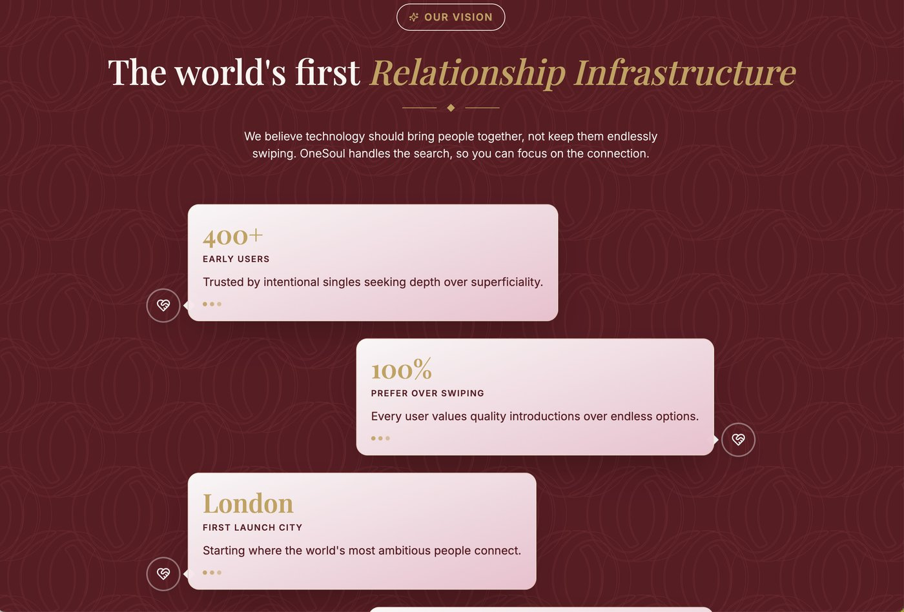
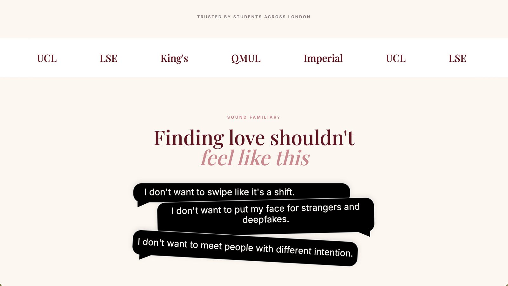
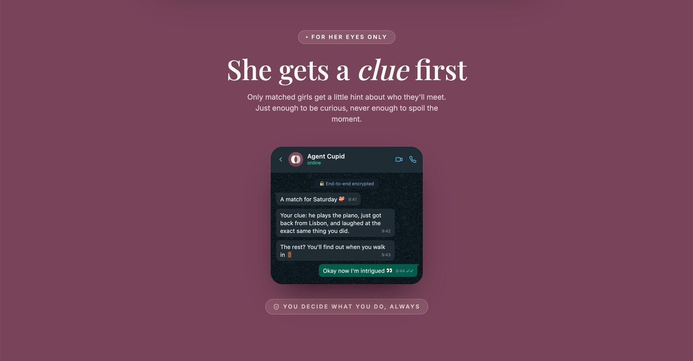
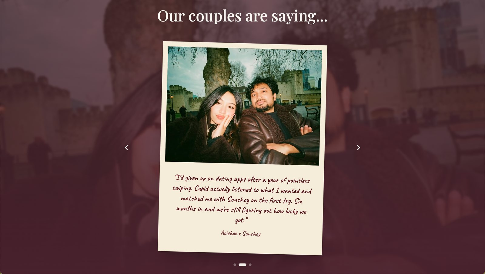

Project overview
1Soul (OneSoul) is an AI-matchmaking product built around "Agent Cupid": instead of swiping through profiles, users talk to Cupid on WhatsApp, and Cupid introduces them to a small number of real, considered matches. It launched first among students at Imperial College London and has since expanded across London universities.
I joined as Founding Product Manager, working alongside the founder rather than leading the venture. I independently owned product design, brand and trust-building, and the product's direction, running an AI-design-AI pipeline end to end: using AI to accelerate research synthesis and iteration, always grounded in real user evidence rather than AI's own assumptions.
User research
Competitor signal mining
Before writing a word of positioning, I read through the comment section under a viral post about an AI-matchmaking competitor to see, unfiltered, what real daters feared about "AI-run dating." Three patterns stood out:
- The strongest backlash was to any language implying AI replaces or handles the relationship itself: "AI dates AI, then you meet" framing was rejected even by users who liked the underlying idea.
- The second-strongest concern was privacy and deepfakes: users asked directly how their photos would be protected, a trust gap the competitor's own page never addressed.
- One notably positive comment confirmed the mechanic itself (AI narrowing down candidates before a human commits time) was welcomed. The problem was never the idea. It was the wording.
User interviews
I ran four in-depth interviews with people in the target audience (a mix of current and lapsed dating-app users), then used AI to help systematically cluster the raw transcripts, not by interviewee but by problem type, so findings could be prioritised and acted on. That synthesis surfaced eight areas, the highest-priority being:
- Brand tone: the site read as "dark" and "mysterious," more like a spellbook than a dating product, undercutting the fact that it's built for serious daters
- Unclear audience: is this for students only, or everyone? The "Connecting students at…" module was described as confusing rather than reassuring
- Trust & safety, especially for women: one participant was uneasy that a match arrived with a name but no photo or shared context, and said she would never accept an AI-scheduled meeting without a conversation first
- AI credibility: participants were curious what Cupid actually does (chat with you? pick the venue?) but the product didn't say
Website redesign
The research reframed the brief: this wasn't a visual refresh, it was a trust and positioning problem. Three shifts drove the redesign: soften the "AI decides for you" framing, replace investor-speak social proof with something specific and local, and give safety its own first-class section instead of a passing mention. Every change below traces back to a specific line from the interviews or the comment-mining exercise, not a stylistic preference.
Before



Women's distrust of the platform wasn't just a research finding. It showed up directly in who actually turned up. At early events, the gender split ran roughly 9:1, men to women.
What women in and around the target audience said about the original site, in their own words:
After
Design principle: keep the mechanic (AI narrows the field), remove every word that implies the AI decides for you instead of with you, and replace every vague claim with a number a sceptical dater could sanity-check themselves. Research had called the original brand "like a spellbook," "untrustworthy," and "too heavy," so the redesign also meant rebuilding the colour system itself, away from mysterious near-black and gold toward a considered palette of sage, blush, plum and deep wine that reads as warm and serious rather than secretive.


The rebuilt colour system: sage, blush, plum and wine in place of the old mysterious near-black and gold, directly answering the "spellbook," "untrustworthy" and "too heavy" feedback from research.
A women-first strategy
The interviews were clear that the sharpest hesitation belonged to women: being sent a name with no photo or shared context, and asked to trust an AI's judgement about who to meet. Rather than soften this with reassuring copy alone, I designed a concrete mechanic around it: she gets a clue first. When Cupid finds a match, the woman receives a small, specific hint on WhatsApp, a detail like "he plays the piano, just got back from Lisbon, and laughed at the exact same thing you did", enough to be curious, never enough to spoil the moment or feel like a dossier. The rest, and the decision of whether to go, stays entirely hers: "You decide what you do, always." "Girl first" isn't just a design principle here; it's literal copy inside the product's own onboarding flow.
This turns an abstract safety promise into something she can feel on the first interaction: curiosity with consent, instead of a cold introduction she's asked to simply trust.


Also part of the role
Alongside product and UX, I contributed to early growth and marketing, including an on-the-ground content strategy (street interviews at London universities) designed to pair content production with same-day sign-ups, plus platform-specific playbooks for Instagram and TikTok.